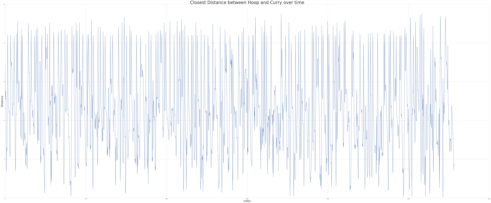
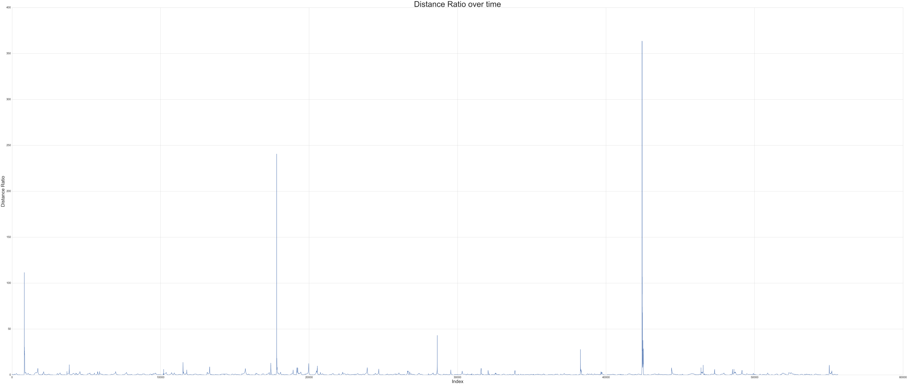

January 13, 2017
IIDATA is a one-day data science convention hosted by UC Davis undergraduate students. This year will be on Feb.4, 20117. There will be hands-on workshops, tech talks and modeling competitions in this event. I think it would be a good learning opportunity for people interesed in data science to attend. For more information, please visit the website. Lately, the organization team released their dataset for the Predictive Modeling Competition(PMC). This year the challenge is quite interesting.
Given Stephen Curry’s distance to ball, hoops and the opposing team’s defenders, can you determine when he is releasing the ball?
They also have a leaderboard with more detailed information about the competition here, especially the submission format.
This dataset contains temporal snapshots taken every 0.04 seconds during the November 12th, 2015 Golden State Warriors vs. Minnesota Timberwolves game (upon which Curry is on the court). It was told that Curry took **24** shots. For each shot, you are expected to find when he is releasing the ball from his hands with as much accuracy as possible. The data source is from [SportVU](https://www.stats.com/sportvu-basketball/). These are the variables:
It is a little bit surprise to me at first because it's not a typically supervised learning problem. There are some challenges or ambiguities involved:
import numpy as np
import pandas as pd
import seaborn as sns
import matplotlib.pyplot as plt
%matplotlib inline
import matplotlib.pylab as pylab
params = {'legend.fontsize': 'x-large',
'axes.labelsize': 'x-large',
'axes.titlesize':'x-large',
'xtick.labelsize':'x-large',
'ytick.labelsize':'x-large'}
pylab.rcParams.update(params)
pd.set_option('display.max_colwidth', -1)
plt.rcdefaults()
sns.set(style="whitegrid")
curry_df = pd.read_csv("curry.csv")
curry_df.head()
| time | curryball | currylhoop | curryrhoop | balllhoop | ballrhoop | def1dist | def2dist | def3dist | def4dist | def5dist | |
|---|---|---|---|---|---|---|---|---|---|---|---|
| 0 | 47.925333 | 0.965270 | 15.652612 | 92.829463 | 16.323108 | 91.876879 | 8.603274 | 16.950232 | 27.471575 | 30.409634 | 35.474795 |
| 1 | 47.924500 | 0.797786 | 15.223746 | 93.094109 | 15.935113 | 92.307938 | 8.298388 | 16.730251 | 27.240581 | 30.249721 | 35.246274 |
| 2 | 47.923833 | 1.035342 | 14.806208 | 93.324333 | 15.593023 | 92.293618 | 7.992415 | 16.471735 | 26.975070 | 30.059684 | 34.973485 |
| 3 | 47.923167 | 2.126335 | 14.375951 | 93.577226 | 15.994375 | 91.469738 | 7.693763 | 16.237772 | 26.712746 | 29.885916 | 34.705748 |
| 4 | 47.922500 | 2.704138 | 13.937750 | 93.836626 | 15.895369 | 91.200628 | 7.393487 | 15.996931 | 26.437723 | 29.697227 | 34.429396 |
curry_df.shape
(55615, 18)
sum(map(lambda i,j: i<j, curry_df['currylhoop'],curry_df['curryrhoop']))
50636
50636/55615.0 #maybe a data problem
0.9104737930414456
As we know, Stephen Curry is a special shooter in the NBA history, especially in 2015-2016 Season. Using the movement data is a way to understand his shooting pattern, which would be helpful for us to infer his shot times.
First, since Stephen Curry is known for his 3-point and long-distance shots, the changes of distances between Curry and the hoop can tell something about how Stephen Curry released the ball, 3-point or layup. It’s tricky to notice that the dataset include all the movement data of Curry on the field, which means he may play offense or defense. Through some research about the specific game online, we know for the first half, the left hoop is the goal of Golden Warriors, and vice versa. It could be useful to come up with some clever ways later to identify whether Curry is in attacking mode.
def getQuarter(x):
if x >=36:
return 1
elif 36 > x >= 24:
return 2
elif 24 >= x >= 12:
return 3
else:
return 4
curry_df['quarter'] = map(lambda x: getQuarter(x), curry_df['time'])
curry_df['curryhoop_min'] = map(lambda i,j: min(i,j), curry_df['currylhoop'] ,curry_df['curryrhoop'] )
curry_df = curry_df.reset_index()
plt.figure(figsize=(100,40))
plt.plot(curry_df['index'], curry_df['curryhoop_min'], '-')
plt.title("Closest Distance between Hoop and Curry over time", fontsize = 50)
plt.xlabel('Index', fontsize=30)
plt.ylabel('Distance', fontsize=30)

We have to transform the time variable to make it more understandable and easy to inteprete.
def getMinSecInQuarter(time, quarter):
mins = int(time - 12 * (4-quarter))
secs = int(((time - 12 * (4-quarter))-mins)*60)
millisecs = round((((time - 12 * (4-quarter))-mins)*60)- secs,2)
return pd.Series({'minute': mins,'second':secs, 'milisecs': millisecs})
curry_df = curry_df.merge(curry_df.apply(lambda row: getMinSecInQuarter(row['time'],row['quarter']), axis = 1), left_index=True, right_index=True)
Let’s try to use our reasoning first. As we know when a ball is shot, the distance between the player and the ball will increase while the distance between the ball and the hoop will decrease. So we define ballhoopmin as the actual distance between the ball and the hoop. Thus, we can infer that if the ratio between curryball and ballhoopmin is large, it’s likely that the ball is in the fly.
curry_df['ballhoop_min'] = map(lambda i, j: min(i,j), curry_df['balllhoop'], curry_df['ballrhoop'])
curry_df.head()
| time | curryball | currylhoop | curryrhoop | balllhoop | ballrhoop | def1dist | def2dist | def3dist | def4dist | def5dist | quarter | milisecs | minute | second | curryhoop_min | ballhoop_min | |
|---|---|---|---|---|---|---|---|---|---|---|---|---|---|---|---|---|---|
| 0 | 47.925333 | 0.965270 | 15.652612 | 92.829463 | 16.323108 | 91.876879 | 8.603274 | 16.950232 | 27.471575 | 30.409634 | 35.474795 | 1 | 0.52 | 11.0 | 55.0 | 15.652612 | 16.323108 |
| 1 | 47.924500 | 0.797786 | 15.223746 | 93.094109 | 15.935113 | 92.307938 | 8.298388 | 16.730251 | 27.240581 | 30.249721 | 35.246274 | 1 | 0.47 | 11.0 | 55.0 | 15.223746 | 15.935113 |
| 2 | 47.923833 | 1.035342 | 14.806208 | 93.324333 | 15.593023 | 92.293618 | 7.992415 | 16.471735 | 26.975070 | 30.059684 | 34.973485 | 1 | 0.43 | 11.0 | 55.0 | 14.806208 | 15.593023 |
| 3 | 47.923167 | 2.126335 | 14.375951 | 93.577226 | 15.994375 | 91.469738 | 7.693763 | 16.237772 | 26.712746 | 29.885916 | 34.705748 | 1 | 0.39 | 11.0 | 55.0 | 14.375951 | 15.994375 |
| 4 | 47.922500 | 2.704138 | 13.937750 | 93.836626 | 15.895369 | 91.200628 | 7.393487 | 15.996931 | 26.437723 | 29.697227 | 34.429396 | 1 | 0.35 | 11.0 | 55.0 | 13.937750 | 15.895369 |
curry_df['dist_ratio'] = curry_df['curryball'] / curry_df['ballhoop_min']
Let’s see whether we can observe any pattern of this distance ratio. We can see that there are some obvious spikes, which are probably what we are looking for. Next, we can extract those corresponding times.
plt.figure(figsize=(100,40))
plt.plot(curry_df['index'], curry_df['dist_ratio'], '-')
plt.title("Distance Ratio over time", fontsize = 50)
plt.xlabel('Index', fontsize=30)
plt.ylabel('Distance Ratio', fontsize=30)

# Find the times with the top 24 highest spikes
curry_df.nlargest(24, 'dist_ratio')[["time", "dist_ratio", "curryhoop_min","quarter"]]
| time | dist_ratio | curryhoop_min | quarter | |
|---|---|---|---|---|
| 42425 | 14.455500 | 363.651664 | 18.843438 | 3 |
| 42433 | 14.450167 | 363.327192 | 19.129749 | 3 |
| 42434 | 14.449500 | 241.701580 | 19.158059 | 3 |
| 17819 | 31.062000 | 240.649549 | 34.829993 | 2 |
| 42435 | 14.448833 | 176.939222 | 19.185484 | 3 |
| 42431 | 14.451500 | 115.415805 | 19.068632 | 3 |
| 42424 | 14.456167 | 113.908181 | 18.783849 | 3 |
| 824 | 47.375833 | 111.561951 | 36.922632 | 1 |
| 42437 | 14.447500 | 106.837579 | 19.243607 | 3 |
| 42426 | 14.454833 | 92.652413 | 18.893214 | 3 |
| 42436 | 14.448167 | 87.928430 | 19.214337 | 3 |
| 42430 | 14.452167 | 82.046262 | 19.041845 | 3 |
| 42432 | 14.450833 | 77.040831 | 19.100626 | 3 |
| 42439 | 14.446167 | 74.102692 | 19.302154 | 3 |
| 42450 | 14.438833 | 67.965220 | 19.557624 | 3 |
| 42438 | 14.446833 | 65.596627 | 19.276922 | 3 |
| 42451 | 14.438167 | 63.899451 | 19.572023 | 3 |
| 42428 | 14.453500 | 60.944564 | 18.977573 | 3 |
| 42427 | 14.454167 | 60.595256 | 18.935209 | 3 |
| 17820 | 31.061333 | 57.896951 | 34.785746 | 2 |
| 17818 | 31.062667 | 56.580318 | 34.883618 | 2 |
| 42440 | 14.445500 | 54.899058 | 19.330957 | 3 |
| 42423 | 14.456833 | 53.134837 | 18.717561 | 3 |
| 42429 | 14.452833 | 50.605485 | 19.012620 | 3 |
However, it turns out that the corresponding top 24 “time points” include the noise that many duplicated pointed are counted in a short time period. As we researched online, it just doesn’t make sense to have most shots happened in the third quarter.
We found we can scrape the actual shot times by Curry on the official NBA statistics website here. Although we are not supposed to use it as the submission, we can use it as a way to evaluate and tune our pattern regconition algorithm.
import requests
shots_url = 'http://stats.nba.com/stats/playbyplayv2?EndPeriod=10&EndRange=55800&GameID=0021500125&RangeType=2&Season=2015-16&SeasonType=Regular+Season&StartPeriod=1&StartRange=0'
# request the URL and parse the JSON
response = requests.get(shots_url)
response.raise_for_status() # raise exception if invalid response
shot_logs = response.json()['resultSets'][0]['rowSet']
headers = response.json()['resultSets'][0]['headers']
shots_df = pd.DataFrame(shot_logs, columns = headers)
shots_df.head()
| GAME_ID | EVENTNUM | EVENTMSGTYPE | EVENTMSGACTIONTYPE | PERIOD | WCTIMESTRING | PCTIMESTRING | HOMEDESCRIPTION | NEUTRALDESCRIPTION | VISITORDESCRIPTION | ... | PLAYER2_TEAM_CITY | PLAYER2_TEAM_NICKNAME | PLAYER2_TEAM_ABBREVIATION | PERSON3TYPE | PLAYER3_ID | PLAYER3_NAME | PLAYER3_TEAM_ID | PLAYER3_TEAM_CITY | PLAYER3_TEAM_NICKNAME | PLAYER3_TEAM_ABBREVIATION | |
|---|---|---|---|---|---|---|---|---|---|---|---|---|---|---|---|---|---|---|---|---|---|
| 0 | 0021500125 | 0 | 12 | 0 | 1 | 8:16 PM | 12:00 | None | None | None | ... | None | None | None | 0 | 0 | None | NaN | None | None | None |
| 1 | 0021500125 | 1 | 10 | 0 | 1 | 8:16 PM | 12:00 | Jump Ball Towns vs. Ezeli: Tip to Green | None | None | ... | Golden State | Warriors | GSW | 5 | 203110 | Draymond Green | 1.610613e+09 | Golden State | Warriors | GSW |
| 2 | 0021500125 | 2 | 1 | 1 | 1 | 8:16 PM | 11:46 | None | None | Green 15' Jump Shot (2 PTS) (Curry 1 AST) | ... | Golden State | Warriors | GSW | 0 | 0 | None | NaN | None | None | None |
| 3 | 0021500125 | 3 | 2 | 1 | 1 | 8:17 PM | 11:31 | MISS Wiggins 20' Jump Shot | None | None | ... | None | None | None | 0 | 0 | None | NaN | None | None | None |
| 4 | 0021500125 | 4 | 4 | 0 | 1 | 8:17 PM | 11:30 | None | None | Curry REBOUND (Off:0 Def:1) | ... | None | None | None | 0 | 0 | None | NaN | None | None | None |
5 rows × 33 columns
Thus, we can identify the times of Curry’s shots based on the descriptions in the column VISITORDESCRIPTION.
pattern = r'Curry.*(Layup|Shot)'
shots_df[shots_df['VISITORDESCRIPTION'].str.contains(pattern, na=False)][['PERIOD', 'PCTIMESTRING','VISITORDESCRIPTION']]
C:\Users\jpzha\Anaconda2\lib\site-packages\ipykernel\__main__.py:2: UserWarning: This pattern has match groups. To actually get the groups, use str.extract.
from ipykernel import kernelapp as app
| PERIOD | PCTIMESTRING | VISITORDESCRIPTION | |
|---|---|---|---|
| 7 | 1 | 10:54 | Curry 28' 3PT Jump Shot (3 PTS) |
| 16 | 1 | 9:48 | Curry 25' 3PT Jump Shot (9 PTS) (Barnes 1 AST) |
| 30 | 1 | 8:07 | MISS Curry 3' Layup |
| 41 | 1 | 6:51 | Curry 24' 3PT Jump Shot (12 PTS) (Ezeli 2 AST) |
| 74 | 1 | 3:38 | Curry 18' Pullup Jump Shot (16 PTS) |
| 86 | 1 | 2:13 | MISS Curry 3PT Jump Shot |
| 91 | 1 | 1:50 | Curry Layup (18 PTS) (Bogut 1 AST) |
| 95 | 1 | 0:53 | MISS Curry 7' Floating Jump Shot |
| 101 | 1 | 0:12 | Curry 24' 3PT Jump Shot (21 PTS) (Iguodala 1 AST) |
| 185 | 2 | 4:13 | MISS Curry 27' 3PT Jump Shot |
| 191 | 2 | 3:25 | Curry 11' Floating Jump Shot (23 PTS) (Green 6 AST) |
| 220 | 2 | 0:00 | Curry 2' Driving Layup (25 PTS) |
| 254 | 3 | 8:33 | MISS Curry 21' Jump Shot |
| 275 | 3 | 6:00 | MISS Curry 1' Layup |
| 284 | 3 | 5:17 | Curry 16' Jump Shot (27 PTS) |
| 311 | 3 | 3:06 | Curry 26' 3PT Jump Shot (32 PTS) |
| 313 | 3 | 2:39 | Curry 25' 3PT Jump Shot (35 PTS) (Green 9 AST) |
| 315 | 3 | 2:01 | MISS Curry 25' 3PT Jump Shot |
| 329 | 3 | 0:25 | MISS Curry 10' Floating Jump Shot |
| 391 | 4 | 5:51 | Curry 26' 3PT Jump Shot (38 PTS) |
| 393 | 4 | 5:23 | Curry 17' Jump Shot (40 PTS) |
| 395 | 4 | 4:58 | MISS Curry 26' 3PT Jump Shot |
| 419 | 4 | 2:54 | MISS Curry 28' 3PT Jump Shot |
| 432 | 4 | 1:55 | Curry 19' Jump Bank Shot (42 PTS) (Iguodala 5 AST) |
| 452 | 4 | 0:29 | Curry 26' 3PT Jump Shot (46 PTS) (Green 12 AST) |
To be continued. Stay tuned.:)